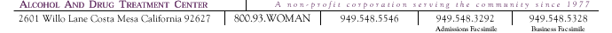

|

|

Addiction knows no demographics.
Our residents come from a variety of backgrounds. Their
one shared bond: they are all women experiencing problems
with alcohol and other drugs.
Why do we specialize in
the treatment of only women, ages 18 and older? It has
simply proven to be more effective. Compounding the complexities
of their dependencies are the social perceptions and labels
still attached to women. Women struggling with chemical
dependencies often experience complex feelings of guilt
and shame. We provide a supportive network of other women,
in which our residents are more likely to lower their
defenses, overcome their feelings of shame and confront
their addictions. By offering a women-centric environment,
we also eliminate the potential distractions of co-ed
programs, in which women may fall into patterns of co-dependency
and adopt the role of caretaker. We allow women to focus
on taking care of themselves. |
|
|
|
|  |
|